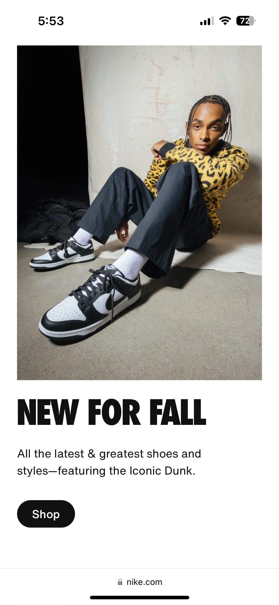

Visual Hierarchy
Apple Visit website
Visual hierarchy is a principle of graphic design and visual design that arranges elements to show their order of importance. By using visual characteristics such as size, color, contrast, alignment, and proximity, designers can structure information and guide users' perceptions and actions.
White Space
Nike Visit website
White space is negative or empty space between text, images, animations, and other design elements. Regardless of its name, white space doesn't necessarily have to be white, although many brands choose this color to create a clean look. White space promotes a clean, elegant, sophisticated aesthetic, making the design more appealing and engaging.
PARC: Contrast
CiscoVisit website
This is mostly used to emphasise the difference between selected elements, and is created when two elements are very different. Contrast creates visual interest for the user and can be used in many different ways.